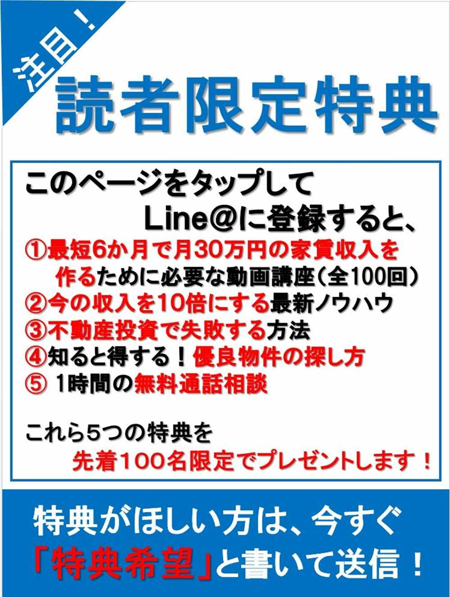

🏠
日
月
縦書き／横書き
| 見えないところで差がつく 不動産投資の「準備力」 |
| 藤本 光秀 |
| CLAP (2018) |
|
ノウハウだけで成功するのは難しい。
「習慣」「コミュニケーション」「マインド」。
これらが揃ってはじめて、成功できる。
不動産投資に必要な準備とそのポイントを解説！
99
％の人が知らない不動産投資の成功法則！
はじめに 不動産に大金を投資する前に何をすればいいか？
この書籍を手に取られた方は、おそらく不動産投資をこれから始めてみたい、もしくは興味のある方だと思います。
さて、突然ですが質問があります。不動産投資で成功するために最も大切なことは何だと思いますか？ 誰も知らない具体的ノウハウ、金融機関の融資情報、優良な不動産会社や担当者の情報、圧倒的な知識や情報量だと思っていませんか？
もちろんこれらはどれも大事なのですが、私の中では他のものだと思います。それは「準備」です。
不動産投資の初心者は、最初に書籍を読み、ネットで情報収集します。これはこれで重要です。では、情報や知識がある人であれば誰でも不動産投資を始められて成功できるかというとそんなことはありません。
私は毎日不動産投資の相談を受けますが、その相談者の中には既に経験されている方も数多くいます。相談者の所有している物件について詳しく聞いてみると、かなり危険な物件を所有している方がいるのです。
その方の知識が全然ないかというと、そんなことはありません。書籍をたくさん読み、セミナーに参加するなど勉強熱心な方ばかりです。しかし、購入した物件は決して優良物件でない方がいるのも事実です。このことから言えることは、知識や情報が自分の中に潤沢にあったとしても必ずしも成功できるわけではないということです。
まったくの未経験の方からもよく相談を受けます。未経験の方の話を聞いていると、この人はすぐに買えそうだなと思う人もいれば、逆に厳しそうだなと感じる人もいます。その違いは何かというと、不動産投資を本当に始めたいという気持ちの強さなど、始めるための行動や考え方、つまり事前準備が全然できていないのです。
「この人は成功するだろうなあ」と思う人は、絶対に不動産投資で成功したい、将来は脱サラをしたい、だから今すぐ始めたい、このような強い気持ちを持っている方が多いです。成功したい意識が高い人の特徴として普段の習慣、ヒトとのコミュニケーションの取り方、不動産投資への心構えのレベルが非常に高いです。
反対に厳しそうだなと思う人の多くが、時間がない、忙しい、すぐ決められない、先送りにするなど、不動産投資ができたらいいなと思っている方がとても多い気がします。
最初にお伝えしておきますが、この書籍は不動産投資の具体的ノウハウは正直言ってありません（笑）。では何について書いているかというと、不動産投資を始めるための「準備」について書かれています。
準備とは何かというと、「習慣」「コミュニケーション」「マインドセット」のことです。これら３つを最初から準備しなければ、スムーズに不動産投資をスタートして、成功することは厳しいのです。
具体的ノウハウを知りたい方は私の書籍「失敗から学ぶ１棟不動産投資の教科書」をぜひご覧ください。この書籍ではノウハウ以前に、不動産投資を始めるための準備体操だと思っていただければと思います。
運動でも高いパフォーマンスをするためには、入念な準備体操が必要と同じで、いくら情報やノウハウがあったとしても準備ができていなければ、不動産投資を始めることは難しいのです。この書籍を読み終えるころには、不動産投資を始める準備が万全になりますので、ぜひ最後まで読んでいただければと思います。
藤本
光秀
不動産価格が高額で借入が必要なためハードルが高い
不動産投資は知識や情報が豊富であっても実際に始めることができないとお伝えしました。
「えっ何で？」
と思いますよね。それには明確な理由があります。
それは単純に物件価格が高額だからです。私がオススメしている１棟もののアパートやマンションは数千万から億単位の価格帯になります。
価格が数千円とか数万円ならすぐに購入できるかもしれませんが、ここまで高額になるとそういうわけにはいきません。
人生で一番大きい買い物と言われる住宅でさえ、地方なら２０００万～３０００万、東京でも５０００万～６０００万ほどです。不動産投資でＲＣマンションになると、ものによっては１件購入するのに１億円以上が必要になります。自宅よりも大幅に高い買い物になるわけです。
価格が高くなると同時に心理的なハードルも上がり、勢いよく購入できなくなってしまうのです。実際に私がそのような経験をしました。最初に購入した物件は２０００万円程の中古木造アパートでしたが、この物件価格でも「本当に大丈夫かな」と心配な気持ちでいっぱいでした。
そして、最初の物件を購入する前に数多くの物件を不動産会社から提案されましたが、何回も断っているのです。今思えば「購入しておけばよかった！」と後悔している物件がたくさんあります。
なぜ、購入できなかったかというと、単純に自信がなかったからです。不動産投資を現金で購入する人は珍しく、ほとんどの人は銀行からの融資を利用して購入します。そのため本当に銀行への返済がうまくいくのかどうか心配になってしまい、良い物件を提案されても断ってしまっていたのです。
私が買うべき物件を見送ってしまっていましたが、何とか最初の１棟目を購入できたのは明確な理由があります。それは不動産投資で絶対に成功したい気持ちが強かったからです。つまり、「不動産投資で必ず成功する！」この強烈な気持ちの準備が必要なのです。
具体的には不動産投資を始める理由、不動産投資を始めたことで得たい理想の未来を具体的にイメージする必要があります。目標や理想のイメージができていないと、困難にぶつかったときに立ち止まってしまうのです。このことについて詳細は２章でお伝えしていきます。
不動産投資には必ずぶつかる壁が存在する
世の中には数多くの収益不動産が存在します。毎日新規の売物件が登場しているにも関わらず不動産投資を始められないのはいくつか理由があります。
まず１つ目が融資です。不動産投資を始めるためには融資が必要です。私は限られた自己資金で不動産投資をはじめようとしていました。不動産投資を始める際に銀行から融資を受けなければなりません。
そして不動産投資を始めるためには、物件価格に加えて諸経費がかかります。その諸経費を含めてすべて融資をうけないと物件を購入することができませんでした。物件を探して銀行へ融資の打診をしてみるものの、自己資金を物件価格の２割入れてくださいと言われて諦めなければいけないことが何回もありました。この時の私は、不動産投資は自己資金がないと始めることができないのだと思い込んでいました。
しかし、それは大きな勘違いでした。実は不動産投資は自分のお金を１円も使うことなく始めることができるのです。それはオーバーローンと言って物件価格と諸経費まで融資をしてもらう方法です。今では当たりまえのような感じですが、初心者だった当時の私には、どうすれば自分のお金を使うことなく融資だけで物件を購入できるのか、その術がなかったのです。
初心者は私と同じようにまず融資でつまづきます。もちろん高年収で金融資産が豊富な方には、関係ない話ですが、年収や金融資産が１０００万未満の方はかなり高い確率でぶつかる壁になります。その壁を乗り越えるためには、不動産会社、つまり業者の選定で間違ってはいけないのです。
初心者の前に立ち塞がる壁は、融資だけではありません。それは業者選びです。世の中には無数の不動産会社が存在します。最近は収益不動産専門の不動産会社が乱立しています。この業者選びを間違ってしまうと、不動産投資をスムーズに始められなかったり、全然良くない物件をつかまされたりしてしまう可能性があります。
不動産会社の中には悪徳業者も存在します。例えば、初心者向けの不動産投資セミナーの参加当日に、物件を提案してそのまま契約書にサインをさせてしまうような業者もおりますので注意が必要です。悪徳業者まではいかないにしても、信頼できる業者は本当にごくわずかです。数ある業者の中から、融資付けも得意、物件情報をしっかりと提案してくれる、社会人としてのマナーが備わっている不動産会社や担当者を見つけるのは至難の業です。融資と同じように業者選定はかならず初心者がぶつかる壁になるのです。
不動産投資は孤独になれば負ける
不動産投資の初心者には、実はまだぶつかる壁が存在します。それは孤独との戦いです。私のところへ相談に来る人のほとんどは自分１人で不動産投資をすすめようとしています。私も実は誰とも相談せずに不動産投資をはじめようとしていました。なぜなら、会社では副業が禁止だったので、上司や先輩、同期にも一切不動産投資の相談はしませんでした。友人には不動産投資の経験者はいませんでしたし、身内にも一切話しませんでした。言ったところで反対されるのが分かっていたからです。完全に私１人で考えて行動していたのです。１人で行動していると、困るときが必ずきます。
例えば、自分が気になった物件とか、良い物件かなと思った物件が、「本当に良い物件なのか」と心配な気持ちになるのです。その不安な気持ちを放置しておくと、何が起きるかというと、間違いなく業者へ断りの連絡をします。例えば「駅から遠い」「ボロイ」「入居が決まらなそう」など、とってつけたような理由で断ってしまうのです。
本当に優良物件だったとしても、不安気持ちから無駄に断ってしまうのです。これは本当にもったいないことをしてしまっていたと思います。
また、不動産投資をはじめようとして物件を提案されたりすると分からないこともたくさん出てきます。その時に１人で孤軍奮闘している人は、誰にも質問ができずにモヤモヤしてしまうのです。唯一相談できるのは、おそらく不動産会社の担当者ですが、営業マンですから中立的な意見はあまり期待できません。担当者にこの物件は良い物件ですか？ と聞けば間違いなく「良い物件です。こんなに良い物件はなかなかでないですよ」と言ってくるはずです。
慣れてくると、このセールストークが本物かどうかだいたい判断がつきますが、初心者には難しいばかりか、「この担当者は本当のことを言っているのだろうか」と疑心暗鬼になってしまい、結局検討している物件を見送りがちです。したがって、この孤独な壁をのりこえるためには、経験者がいる環境に自ら飛び込んでいく必要あるのです。
この章では不動産投資初心者が最初にぶつかる壁（物件価格の高さ、融資付けの大変さ、不動産投資を１人で進めるリスク）をお伝えしました。この壁を乗り越えていくためには、どのような準備をすればよいのかを次章から具体的に説明していきます。
第２章 不動産投資で最短で結果を残すために「習慣」を変える
成功するためには悪い習慣を断ち切ることから始める
突然ですが、私は夏からある習慣を変えました。私にとって、今までの人生がひっくりかえるぐらいの変化があったのです。それは、「１日１食」です。
生まれてから現在まで、１日３食が当然の生活でしたし、それが習慣になっていました。その当たりまえすぎる習慣を、昨年の夏から変えてしまったのです。
私はもともと食べるのが大好きで、若いころはラーメンどんぶりでご飯を食べていたくらいでした（笑）。若いころはよかったのですが、加齢に伴い代謝が落ちて体重が増えてしまっていたのです。
ひどいときは０・１トン（１００キロ）を超えたときもありました。その原因は、幼いころから当たりまえのように身に付いていた１日３食という「習慣」です。その習慣を変えたことで、体重、血圧が下がり、血液検査も劇的に改善、体が軽くなって本当に身軽になった感じがします。
これからお伝えするのは、「ダイエットの重要性」ではありません。「習慣」を変えることの重要性についてです。
習慣の中でも「悪い習慣」は今すぐにでも改善しなければなりません。例えば、つい飲みすぎてしまう、たばこをやめたいのに吸ってしまうなど自分の知らないところで「悪い習慣」となってしまっているものが日常には多くあります。
実は不動産投資を始めるために、すぐに見直すべき悪い習慣があります。それは「先延ばしにすること」です。ヒトは面倒なこと、つらいこと、自分がはじめて経験することなどが目の前にあると、どうしても先延ばしにしようとします。この「先延ばし」という悪い習慣を断たなければ、不動産投資は始めることができません。
例えば、不動産投資に興味がある、でも実際に買うのはまだちょっと......このように不動産投資はやってみたいけど、もっと勉強して不動産会社に連絡するのを先送りにする、良い物件が出てきたけど、とりあえず漠然と不安だから先送りにする、不動産会社の担当者に返買付けを入れるかどうかの返事を先送りする、
このような経験をしたことありますでしょうか？ 私は過去に何回も経験したことがあります。その結果、今考えれば買っておけばよかったと思う物件でも先送りにして結局買えずに時間だけが過ぎてしまったのです。決談の先送りをして良いことはありませんでした。
したがって、不動産投資で最速で結果を残し、家賃収入を得るためには「先送り」の習慣を変えなければならないのです。そもそもなぜ、人は先送りにしてしまうかといと、明確な理由があります。そのひとつが、人間は現状維持が大好きです。自分の気持ちとしては「不動産投資で成功したい、収入を増やしたい、夢をかなえたい」と強く思っていたとします。
しかし、頭の中はどうかというと、無意識のうちに「不動産投資は危ない、リスクもある、他の人はそんなことやっていない、自分だけが始めるのはおかしい」という状態になっています。はっきり言って頭の中では異常事態なのです。
その状態になると、人の頭は、全力であなたを引き留めようとします。実際に私も、自分の頭が勝手に「危ないから今回の物件はたやめたほうがいい、もっと違う物件が出てくるかもしれない」と言い出して、優良物件が目の前にあったにもかかわらず購入せずに終わってしまったのです。
したがって「先送りする」という悪い習慣は今すぐ変えていきましょう！ この習慣を変えることさえできれば、不動産投資を始めるスピードが早くなることは間違いありません。
でも、そんな簡単に習慣を変えるのって難しいでしょと思うかもしれませんが、実はちゃんとした方法があります。次はこの悪い習慣をやめる方法についてお伝えいたします。
悪い習慣を30
秒で断ち切る成功プログラム
最近買い物に行くときに、ある習慣が完成しつつあります。それは「糖質」が何グラムなのか確認することです。
ダイエットをしていないときは気にもしていなかったのですが、この糖質が気になってしかたありません。本に書いてあったのは、食事でダイエットをするなら１日あたりの糖質は
60
グラム以下にしなければならないようです。これにこだわると、食べられるものが全然ないんです（笑）。この買い物をするときに「糖質」がどれくらいあるのか確認する習慣は、ダイエットしようとしたら自然と身に付いた習慣です。
良い習慣を身につけたいものもあれば、反対に私の中で、これは何とかして辞めたい悪い習慣がいくつもありました。
・お酒を飲んだ後のラーメン
・ご飯は常に大盛
・帰宅したらとりあえずビールを飲む
・食べてすぐ寝る
・面倒なことは後回しにする
今ちょっと考えただけでもこれだけの悪い習慣が過去にはありました。
ヒトの行動の
40
％は習慣で行動していると言われています。この悪い習慣を改善しないと、悪い習慣に振り回される人生になってしまいがちです。そして、悪い習慣は不動産投資にも大きく影響してきます。
例えば、先述したとおり面倒なこと、自分の経験のないことを決断、判断することを先送りにしてしまうことです。よくあるのは、不動産会社の担当者から物件を提案されたあとに、返事をするのを先送りにすることです。
不動産投資で最速で結果を残すためには、断るにしてもすぐに返事をする習慣を身につけなければなりません。なぜなら、ライバルはたくさんいるからです。
そんなことを言うと、「価格は大きいしそんな早く決められないよ～」と思いますよね。しかし、そんなことは言ってられないのです。では、どうすれば先送りせず１秒でも早く担当者に連絡できるようになるか、その方法をお伝えします。それは日ごろから「練習」します。
何のことかというと、買付けを入れる練習をするのではありません。具体的には「すぐに決断をする」練習をするのです。例えば、仕事でメールをもらったらすぐに返信をする、どこかに行く用事を決めるときはすぐに決める、ＬＩＮＥでメッセ―ジがきたらすぐに返信をする、飲食店で食事を決めるときは
30
秒で決める
このようにとにかくすぐに返事をする癖をつけて習慣にしてしまうのです。不動産会社の担当者への連絡はそれぐらい早くならなければいけないのです。これについては第３章で詳しくご説明いたします。
しかし、最初からそんなに早く買付けの連絡はできないと思いますよね。１人で判断できることに越したことはありません。
でも自分は初心者で決めきれない......
その時は、経験者と相談して不安や疑問をすぐに解消して、最短時間で不動産会社の担当者へ連絡する癖をつけていきましょう。「先送りにする」この習慣を変えなければ悪循環になります。物件を探す、物件の提案を受ける、先送りにする、物件が買えない、不動産投資へのモチべーションが低下するこのような悪循環に陥ると、不動産投資を必ず諦めます。
以前の私がそうでした。物件は買いたいけど先送りにしてモチベーションが下がってしまっていた時期がありました。おそらくこの読者さんの中にも、最近モチベーションが下がっている気がしている人もいるかと思います。次は、そのモチベーションを上げる、維持する方法についてお伝えします。
モチベーションを一気に上げる禁断の方法
ここでは、不動産投資を始めるためのモチベーションを一気に上げる、維持する方法についてお伝えいたします。
ところで、あなたは猛烈に異性を好きになった経験が過去にありますか？ 例えば、学生時代に好きになった人が少なくても１人か２人はいたと思います。しかも、ただ好きになるだけではなくものすごく好きになってその人が好きで好きで居ても立ってもいられないような経験したことがある人はいるはずです。
メールをがんばって異性の人に送ってみたりとか、積極的に話しかけたりとかなんとかその異性とお付き合いをするために行動した経験が自分にもあります（笑）。
でも恋愛って簡単にうまくいくことはなくて撃沈してテンションが一気に下がってしまって結局諦めてしまうことってよくありますよね。最初は、絶対にこの人と付き合いたい！ と意気込んでいたにも関わらず、それがうまくいかないとモチベーションが下がってしまいます。
さらに、言い訳が始まったりします。あの人が自分に振り向かないのは、相手には見る目がない、よく考えたらあの人は性格が悪い、相性が合わないなど、自分を正当化して、うまくいかないことに対して理由を作ってしまうのです。実は、不動産投資でもまったく同じことが起きます。
一番最初は、絶対に不動産投資で成功したい、収入を増やしたい、人生変えたいと言っておきながら、自分の条件にあう物件が見つからなかったり、融資付けがうまくいかなかったりすると、当然物件は買えないです。そのような状態が続くと、不動産投資へのモチベーションは一気に下がり、それまでがんばって業者の開拓をしたり、物件を探すなど、それらの行動がぴたっと止まってしまうのです。
実際に今までそのような人を何人も見てきました。だから、なかなかうまくいかないときに、モチベーションをなんとしてでも維持もしくは上げていかないとならないのです。
では、どうすればモチベーションを維持できるか具体的にご説明いたします。
まず最初に、自分が不動産投資へのモチベーションが下がっていることに気が付くことです。物件が買えない状態が続くと、自分では気が付かないうちに資料請求をしなくなったり、物件を見にいかなくなったりします。つまり、行動が止まっているのです。
最も良くないのは、何もしない状態がズルズル続いてしまう状態です。この状態の時に、「あっ最近自分はモチベーションが下がっている」と気づき、「なんとかしなければならない」と問題意識を持つことが大変重要です。
次にどうすればいいかというと、不動産投資をしないまま過ごした場合のデメリットと、不動産投資を始めることで得られる未来を具体的に想像してみてください。
例えば、私のケースです。不動産投資を始めていなければ今でも毎日強烈なストレスを抱えながら、好きでもない仕事をして、長い時間を会社に拘束されていたでしょう。次に不動産投資を始めることで期待できる明るい未来を考えてみてください。本業以外の収入が増え、経済的に気持ちの余裕ができます。不動産投資の規模が大きくなれば脱サラをして、自由な時間を手に入れることができます。
そして、職業も自分の好きなものを選択できるようになります。家族とは旅行に行く回数が増え、外食に行く回数も増えるでしょう。このように、何もしない場合のデメリットと、行動を続けて得られる自分の理想の未来をより具体的に考えるのです。具体的に考えれば考えるほど、「やっぱりこのままではいけない」と思えるようになってくるはずです。
そして、次に何をするかというと、不動産投資を始めるための習慣を作っていきます。その方法として自己暗示が有効です。毎日鏡の前で「自分は不動産投資で成功して年収１０００万になる」を声に出して
20
回から
30
回言ってみるのです。これは、アフォメ―ションと言って肯定的なことを自分の口でなげかけて、行動と人生を好転させるテクニックです。
サッカーの本田選手も行っていたことでは有名な話です。注意点としては、ネガティブなことは一切言わないことです。例えば、「今はできないけど不動産投資で成功する」これだと効果がなくなってしまうので、ポジティブな言葉だけを自分に朝晩投げかける習慣を作っていきましょう。
そしてモチベーションを維持する方法もあります。それは「ルーティン」を作ることです。ラグビーの五郎丸選手がボールを蹴る前のポーズは大変有名ですよね。ルーティンとは習慣ともいわれています。つまり、同じ時間やタイミングで行動をすることで楽に結果がでると言われています。
では、不動産投資を始めるためのルーティンとは、例えば、通勤電車に乗っているときは必ず携帯で不動産関連のコラムを読んだり、仕事の休みの人には、必ず１冊は書籍を読むなどが該当します。
時間ができたら行動するのではなく、決まった時間、タイミングで行動する習慣を作り、継続していくことで必ず成果は出ます。これが習慣化できていないと、自分のモチベーション上がったり下がったりしてしまうのです。
モチベーションが上がったからがんばる、下がったらがんばらないのではなく、常に行動をすることをルーティン化できれば遅かれ早かれ結果はついてきます。
最後に一番手っ取り早くモチベーションを上げる方法があります。それは、経験者のいるところで自ら飛び込んでいくことです。
想像してみてください、例えば不動産投資がまったく未経験の人達が集まっているグループと経験者ばかりのグループがあったとします。
未経験者のグループに行って、「私、不動産投資を始めたいんです！」と言ったら、何て言われるでしょうか。おそらく、「危ないよ～」「人口減ってるしヤバくない」「借入れ返せなくなったらどうするの」などネガティブなことしか言われないでしょう。
反対に、経験者のところへ飛び込んでいけば、「絶対早く始めたほうがいい！」「大丈夫！ 必ずうまくいくよ！」とあなたの背中を押してくれるはずです。
本当に不動産投資を始めたいなら、未経験者と経験者どちらの環境に飛び込めばいいかは一目瞭然です。なかなか物件が買えない、なぜかテンションが下がってきたかなと思ったら、経験者に会いに行って強制的にモチベーションを上げてしまいましょう。
選択と集中で最初の１つ目をまずは購入する
前節までで、不動産投資で成功するためには、悪い習慣を断ち切り、モチベーションを上げ、それを維持しなければならないことをお伝えいたしました。これさえできれば、最初の物件購入はググっと近づくことは間違いありません。しかし、この状態になったとしても、「危険な罠」があなたを待ち伏せています。
それは、「目移り」してしまうことです。世の中には、不動産投資の他にも株式投資、ＦＸ、仮想通貨、物販、アフィリエイトなどを含めたネットビジネスなどが存在します。どの投資やビジネスでも、成功者は必ずいて「誰でも儲かる」「簡単」「楽に」このような目をひくようなキャッチコピーがネット上にはよくあります。
このようなものを見ると、ちょっとやってみようかなと思って手を出す人がいますが、これはあまりオススメできません。たしかに成功している人はいますが、成功するまでには大変な努力をしている人がほとんどです。
どの投資やビジネスもやはり継続することで成功しているのです。したがって、不動産投資で成功するならば、１つのことに全力で集中して取り組む必要があります。
反対に、不動産投資を始めようとしながら他のことにも取り組もうとするとなかなかうまくいきません。なぜなら、不動産投資への熱い気持ち、熱量が分散されてしまうからです。
例えば、あなたに好きな異性がいたとします。最初は何とかお付き合いしようとしてごはんに誘ったり、頻繁に連絡するなど、がんばって相手の気持ちを射止めようと必死になりますよね。
しかし、世の中に美男美女がいくらでもいます。最初に好きになった人以外にも、気になる異性が出てきた際に、こっちの人は、もしかしたらお付き合いしてくれるかもしれないからちょっとだけアプローチをしてしまうと、最初に好きになった人への熱い気持ちが分散されてしまうのと同様です。
一番最悪な結果は、最初に好きになった人ばかりではなく、目移りしてしまった人もうまかず、結局何も成功しないパターンです。不動産投資も同じように、最初に「自分は本気で始める」と思ったら、最初に掲げた目標を達成するまでは、他の投資などには目もくれず、一心不乱に行動をしていくべきです。収入の柱を複数を作ることは私もオススメしますが、基盤となる収入を作るまでは１つに絞って、全力で取り組んでいきましょう。

タップしても登録できない場合、「@mas5709w」でＩＤ検索して友達追加をしてください。
第３章 不動産会社から超優良物件を提案してもらうためのコミュニケーション術
不動産会社の担当者の前では丸裸になる？
不動産投資を始めるにあたり準備しておくべき必須スキルがあります。それは「コミュニケーション能力」です。
なぜ必要かというと、不動産投資を始める時、保有している時、最後は売却するときまで、さまざまな人と接する機会があるからです。
例えば、物件を仲介する不動産会社の担当者、銀行、司法書士、火災保険会社です。物件購入後は、賃貸の管理会社、リフォーム会社、シルバー人材など数多くの人と接する機会があるのです。
その中でも最も接する頻度が多いのは、物件を提案する仲介の不動産会社です。不動産会社との接触回数は、最初の段階では一番多くなります。この仲介会社の担当者とのコミュニケーションの取り方が大変重要になります。
というのも、やはり物件情報を持ってきてくれるのは不動産会社の担当者です。この担当者といかにうまくコミュニケーションをとるかが重要です。そこで、この章では担当者とどのように接するようにするのか具体的にご説明いたします。
不動産会社に行くと、必ず記入するものがあります。それは属性情報です。属性情報というのは、年収、お勤め先、金融資産、既存の借入れ、家族のことなどのことです。注意点としては、これらの情報は、素直に不動産会社の担当者へ提示することが大事です。
なぜなら、担当者はその情報を見てどこの銀行で融資を受けられるのか、どのような物件を購入していくべきかを判断するためです。注意点としては、属性情報を提示しない人がたまにいます。しかし、これは絶対にやめるべきです。明らかに怪しい変な不動産会社や担当者でない限りはきちんと伝えるべきです。
その情報が分からなければ、担当者は物件とセットにして提案できる銀行も分からなければ、どのような物件を提案していいかも分かりません。したがって属性情報を提示できない人には、まず物件情報が手元にくることはありません。
最初のうちはその情報を提示するのに少し抵抗があるかもしれませんが、数を重ねていくうちに慣れてきます。しっかり自分がどのような人なのか担当者が分かるように属性情報を担当者へお伝えください。
不動産会社を訪問して聞かれる属性情報はだいたい決まっています。何社も不動産会社を回っていると、同じことを何回も書くのは面倒なので、事前に自分の属性情報を１枚の紙にまとめておき、初回面談時に渡すようにするとお互い手間が省けます。
不動産会社の担当者と円滑なコミュニケーションをとるためにも、きちんと準備をしておきましょう。
人見知りが途切れることなくコミュニケーションをとる方法
不動産投資を始めるためには、先述したとおりいろいろな人と接する機会があります。したがって、コミュニケーションスキルは必須になってきます。しかし、世の中誰とでも気軽に話せる人もいれば、初対面の人と話すときに緊張してしまい、うまくコミュケーションがとれない人もいます。
例えば、初対面の人と話をしようとしたときに、何を聞いていいか分からなくなって沈黙が続いた経験がありませんか。私は何回もあります。
実はもともとはとても人見知りで知らない人と話すのが苦手でしたが、いくつかのポイントや注意点を知っておくことで、知らない人でもすらすらと話せるようになるのです。
では、具体的にどのようなところに気を付けるべきなのかをお伝えしていきます。まず一番大事なのが「リアクション」を大きくすることです。
あなたは物事を真剣にしている時の表情はどのようになっているか想像してみてください。おそらく、表情は固くなりどちらかというと、怖い顔になってしまっているはずです。そんな顔を見た人は、この人は怖い人なのかな、自分にあまり興味ないのかなと思ってしまうのです。
あとは、言葉のキャッチボールが重要です。良いコミュニケーションには、必ず言葉のキャッチボールがあります。しかし、リアクションがよくないと、このキャッチボールができなくなってしまうのです。まずは相手が言ったことに対して、大きくリアクションをしてみる癖をつけていきましょう。
次のポイントは、話題をどのように選択するかです。不動産投資の担当者と雑談するタイミングが必ず訪れます。例えば、不動産会社の担当者が車を運転して物件見学に行くときの車内とかです。
物件を実際に見学しているときは物件の詳細や特徴、強みなど具体的に説明を聞いているケースがほとんどです。それが車内の中になると状況が変わります。
例えば、最初は見学にいく物件のことを質問するなどしてある程度会話はできるものの、時間が経過すると話すネタがなくなり、沈黙の時間が続きます。この時間が一番しんどいのです。
では、どんな話題をするかですが、自分は芸人さんみたいにトークがうまいわけではないし......そんな心配をしてしまうはずです。しかし、そこは全然問題ではありません。話題選びの重要なところは自分との共通点を探すことです。
例えば、自分の仕事が営業職であれば、不動産会社の担当者も当然営業マンです。そこで仕事のことについて話していくのです。
「不動産業界の営業も大変じゃないですか？ 私も営業職で毎日数字を追求されてプレッシャーが半端じゃないんです」
このような話をしてもいいと思いますし、相手が
30
代妻子持ちであれば、お子さんの会話でもいいと思います。とにかく相手と自分の共通点を見つけて、お互い共感できるポイントを見つけていくのです。
それでも話題に困ったら、一番簡単な方法があります。それは天気です。さすがに今日は良い天気ですね。これだけではすぐに会話は終わってしまうのですが、その天気ネタに加えて自分のエピソードを加えていくと会話が広がっていきます。
例えば、今日は良い天気ですね、自分はいつも天気が良い日には公園でバスケをしたりするんです。学生時代は運動をしていたのですか？ とか、こんな天気の良い日は子供とどこかに出かけたりするんですか？ など、とにかく天気にプラスアルファのことを話すようにすることをオススメします。天気が良いか悪いかは誰にもでもできますし、そこに自分だけのエピソードを付けくわえると、話が弾んでくるのです。
そして、相手から質問をされたときにある注意点があります。それは質問に答えるだけではなく自分の情報を少し加えて、返事をするようにします。例えば、不動産投資のことはよく勉強されてるんですか？ と聞かれて「はい......」これだけではすぐに会話が終わってしまいます。
そこは「はい、勉強しています。本を数冊読んだり、ネットでも勉強しているのですが、なかなか知識が頭に入ってこないんです」このように話し方を変えるだけで、相手の印象がまったく異なります。
このようにすることで相手は自分が話かけたことに対して興味を持ってくれたと思い、あなたががんばって話そうとしなくても相手からいろいろと話しかけてくれるはずです。ここでのポイントはちょっと自分の話題を出してみることです。そうすることで会話は自然と途切れないようにすることが可能なのです。
ここまで人見知りでもうまくコミュケーションをとる方法についてお伝えしてきましたが、最後に一番大事なことをお伝えします。それは「相手に興味を持つ」ということです。特に不動産会社の担当者と話すときは、お互い緊張していますし、おそらくあなたは騙されないように最初は疑いの目で接するはずです。
しかし、物件情報は誰が持ってきてくれるかというと担当者です。世の中の担当者は、一方的に話してきたりする人もいますが、そこは我慢してまずは担当者に興味を持って、対応することで優良な情報が入ってくるのです。
レスポンスを制す者は不動産投資を制す
不動産投資で優良物件の情報を手に入れるために必ずやらなければならないことがあります。それは何かというと「即レス」です。何のことかと思いますよね。簡単に言えば「すぐに返信をする」たったこれだけなんです。
なぜこれが大事かというと、優良物件ほどすぐに買付けが入りなくなってしまうからです。不動産会社からメール、ＬＩＮＥ、電話で情報を提供してもらうようになります。そこでいかに早く返信できるかが成功できるかできないかの別れ道になります。
しかし、不動産投資を検討している人の中には提案してもらった物件に対して、買付けを入れる、断りの返信、連絡が極めて遅い人がいます。ひどいケースだと連絡があったにもかかわらず折り返しの連絡すらしない人もいますが、この行動は言語道断です。
不動産会社の担当者は当然、一番早く買付けを入れてくれる人を優先します。もちろん融資がきちんとひける人でないといけないのですが、仮に融資が問題ない人でも折り返しの連絡ができない人は良い物件情報を手に入れることは難しくなります。
担当者の気持ちになってみてください。不動産会社の担当者は営業マンです。日々会社から数字を追求されています。元付け会社であれば多少の時間の余裕があるかもしれませんが、客付け会社の場合には時間的な余裕はありません。そのため融資は問題ない人から連絡するわけです。
もし仮に一番早く物件情報が手元に届いたとします。しかし、あなたは初めての物件購入で買付けを
躊躇
してしまいます。考えているうちに半日が経過しました。ようやく決心して担当者に連絡したときには、既に他の人が買付けを入れてしまっている状態で結局買えなかった......このようなことが頻繁におきます。
実際にこれと似たケースで物件を購入できなかった人がいます。具体的には、不動産会社の担当者に優良物件の情報が出てきました。運良くその情報を一番先に連絡してもらうことができました。
しかし、不動産会社の担当者から携帯に連絡はしてもらったものの、その人は本業の仕事が忙しく担当者からの着信に気づかなかったのです。そして、着信に気づいて夕方になって連絡したところ、他の人が買付けを入れてしまっていたケースがありました。物件情報の詳細を確認してみると、それは本当に滅多にでない物件で、本当に悔しがっていました。
このような経験から言えることは、不動産会社の担当者からの着信や、ＬＩＮＥの連絡、メールなどは常に確認する必要があります。もちろん普段の生活では仕事で忙しい方がほとんどのはずです。しかし、そこは何が何でも時間を作って折り返しの連絡をするようにしましょう。
私自身も物件を探しているときは、１秒でも早く折り返しの連絡をするようにしました。営業マンでしたので、外に出て営業をしていることが多かったので比較的連絡しやすいということもありました。
内勤をしているときに連絡がきた場合には、どうすればいいかというと、私がよくやっていたのは「トイレへダッシュ」でした。トイレにいく振りをして、不動産会社の担当者へ即連絡するようしていました。そのくらい即レスの意識を持たなければ自分の納得できる物件は購入できないのです。
そして、提案される物件の中には条件的に躊躇する場合もありますし、当然断る場合もあります。注意しておきたいのは断ろうとすると返信が遅れがちです。しかし、断りの返信も即返信したほうがよいです。それもきちんとした理由をつけてです。不動産会社の担当者の本音としては「買うの？ 買わないの？」はっきりしてくれ！ と心の中で叫んでいるはずです。
その担当者への連絡が遅かったり、ひどいときは折り返しの連絡をしない、このようなことをされると担当者はどのように感じるでしょうか。当然心象も悪くなりますし、次回の提案も期待できなくなってしまいます。したがって、不動産会社の担当者の連絡は即返信を心がけることで優良物件をつかめるようになります。いつ担当者から連絡がきてもすぐに対応できる心の準備と即行動をしていきましょう。
出会いを大切にする気持ちが大事
人が生まれてから死ぬまでにどれだけの人と接すると思いますか？ それは人によって仕事とか生活する国や地域などの環境で変わってくると思います。不動産投資をしようとすると何もしない人と比較するといろいろな人と出会い、接する機会が増えます。その出会いを大切にすると不動産投資は成功すると思います。
不動産会社の担当とたくさん会って話をしていると、さまざまな人と出会います。年齢は若い人もいれば
50
代の担当者もいますし、知識や経験も違ったりします。出会う人の中にはあまり自分とは相性が合わなそうな人、一方的に営業ばかりしてくる人、全然やる気のない人なども数多くいます。そのような人に出会った際に、「もう２度と会うことはないな～」と思うこともあるでしょう。実際に私も経験したことがあります。
不動産投資を始めようとして、一番最初にアポを取って担当者と面談に行ったことがありました。最初の面談で私の年収、金融資産などの属性を伝えると、あからさまにやる気がなくなったのが見て分かりました。その時はこの不動産会社からは物件を購入することはないかと思っていました。しかし、その数か月後２つの物件を購入することになったのです。
ここで一番お伝えしたいことは、「どこに縁があるか分からない」ということです。
一期一会という言葉があります。この言葉の意味とは、出会いというのは二度と訪れることのない大切な時間だから、そのことをしっかりと受け止めて出会いを大切にしたほうが良いという意味です。
自分の経験から思うのは、不動産投資での出会いの１つずつを大切にすると、後々良い物件情報が舞い降りてきたりします。
不動産業界はまだまだグレーなイメージがするので、自分は絶対騙されないぞと思ってしまいがちです。しかし、そのような気持ちで人に接触するのはオススメできません。したがって、どんな不動産会社の担当者とも出会いを大切にしようとすれば、相手に対する感謝の気持ちが沸き上がってくるはずです。この感謝する気持ちがとても大切です。
仮に融資は問題ない、自己資金も潤沢にあるこのような人が２人いたとします。その担当者が物件を提案した際に、感謝の気持ちでいつも対応してくれる人と、物件の条件や数字だけを見て機械的に返事をする人どちらの人にまた提案してみたいと思いますか？
私は前者かと思います。だから。この人と出会えてよかったと思って出会いに感謝していきましょう。
タップしても登録できない場合、「@mas5709w」でＩＤ検索して友達追加をしてください。
第４章 初心者が不動産投資を始めるために必要な４つのマインドセット
自分に必要な知識・情報のみを取捨選択する
不動産投資を始めようとした時に、まず間違いなくするのが勉強かと思います。一番ポピュラーな勉強方法としては、書籍を読むことです。Ａｍａｚｏｎで不動産投資の本を検索すると、無数にあります。毎日のように新着の書籍が出版されています。インターネットで「不動産投資」と検索すると、ブログや業者の情報などが、いつでも何でも検索できてしまうのです。
そのような状況で、どの情報を信頼していいか分からない人がとても多いです。不動産投資と言っても、区分マンション、１棟アパート、マンション、新築、中古、都市部、地方、シェアハウス、戸建投資などさまざまな不動産投資法が世の中には存在しています。
どの方法でも成功している人がいるので、自分に適した方法は何なのか分からなくなってしまうのです。
不動産投資を始めるためには最低限の情報は必要ですが、必要以上に情報を取り入れようとすると判断材料が多くなりすぎて本当に自分に適した情報は何かが分からなくなってしまいます。では、どうすればこれだけ情報が溢れている中、自分にとって一番必要な情報だけを取捨選択していけるのかをご説明いたします。
まず１つめですが、書籍の著者やブログを書いている人がどのような人なのかを確認します。具体的には、会社員なのか、自営業なのか、年収はどれくらいで、金融資産はどれくらい持ってそうか、お勤め先の起業は中小企業か大企業なのか、このあたりを確認するといいと思います。
なぜなら、書籍の著者にはできたことが必ず自分にも再現性があるかないかは分かりません。再現性が高いかどうかを見極めるためには、自分と同じような属性なのかどうかを見極めるといいかと思います。
そして、２つ目です。書籍を読んで共感できるところが多いかどうかも大変重要なポイントになります。例えば、著者がどのような気持ちで不動産投資を始めたのか、これから不動産投資を始める人にどのようなメッセージを書いているのか確認するのです。
書籍に書いてあるノウハウももちろん大事ですが、著者の人柄や今までの経験、今後の思いなどを見て、共感できるところが多ければマネしてやってみるということをぜひ試してみてください。
たまに見ることがありますが、他人のことやノウハウを誹謗中傷しているケースもありますが、その人のマネをしてみようとは思わないですよね。
ノウハウはすばらしい、でも人は好きになれない、その成功者のやり方をしようとしてうまくいかなったときは「やっぱりあの人のやり方はダメだ」と思って諦めてしまいがちです。したがって情報発信をしている人のノウハウだけではなくもっとパーソナルな部分を見て自分でも試してみようか検討してみてください。
成功の秘訣は「無視する」「頼る」「続ける」
ドリームキラーという言葉をご存じでしょうか。これは不動産投資で成功したい、人生変えたいというすばらしい夢＝ドリームを食い殺してしまう人のことです。
本書の第２章でお伝えしたとおり、夢を持つ人の回りには必ずドリームキラーが存在します。自分が不動産投資を始めたいと言えば、何か理由をつけて「やめほうがいい」と全力で引きとめてくる人達がいます。
もしそのような人があなたの回りにいるのなら、全力で無視してください。そのような人と関わっていたとしても損はあっても得はまったくありません。不動産投資のことは一切相談しないほうがいいです。障害にしかなりません。
今でも私の回りでは、不動産投資なんか最近はやばいんじゃないのと言ってくる人がいます。本人が実際に経験して失敗したことがあるなら、まだ説得力もありますが、経験すらしていない人が言うことは真面目に耳を傾ける必要はありません。
第２章で書いたように、もしあなたの回りにドリームキラーしかいないような環境であれば、今すぐ経験者でなおかつ背中を押してくれる人が集まっている環境に身をおくことをオススメします。
次が、不動産投資は人に頼ることが重要です。不動産投資の未経験者が始めようとすると分からないことだらけです。不動産投資に関係する法令、用語など国家試験のように大量にあるわけではないですが、ある程度のことは知識として必要になります。自分が分からないときに日本人というのは島国のせいなのかすべて自分１人で解決してしまいがちです。
だから１人で解決できるネットの知恵袋などが存在しているのかもしれません。私もネットでこの知恵袋を利用したことがありますが、質問したことに対して返ってくる返事は期待できるものではなく、自分が抱えている問題、疑問を解決することはできません。
このように日本人は他の人に頼ることが苦手なのかもしれません。ニュースを見ていると、子育てに悩んだ親が誰にも相談できずに自殺してしまう、親の介護について１人で悩んでしまい、最悪親を殺してしまうなど、誰かに相談できていれば違う結果になっていたかもしれない事例が数多く発生しています。
不動産投資も同じで悩みが解決できない状況が続くと、最初から何もなかった、検討もしていなかった、このように一番最初の０の状態にしようとします。
つまり、不動産投資を諦めてしまうということです。誰かに相談していれば問題なく不動産投資家としてデビューを果たしてはずです。
だから、１人で悩まないでください。経験者や実績のある人は必ず世の中に大勢います。そんな人見たことないという方もいるかもしれませんが、それはあなたが出会っていないだけです。不動産投資で悩んだら迷わず相談するようにしてください。
失敗しても死ぬわけではない
不動産投資に成功すれば安定的に家賃収入が毎月口座に振り込まれ、経済的に余裕が出てきます。
資産を作っていく手段としてすばらしい不動産投資ですが、少なからず失敗をしてしまったという方は存在します。例えば、一番よくあるのは新築ワンルームマンション投資です。
資産運用のために新築区分マンション投資を始めたものの、毎月の収支は購入当初から赤字、自分のミスに気付いて売却しようとしても残債以上で売却すらできない状態になり、物件を所有してても赤字、売却しても赤字、このような失敗事例は本当によく聞く失敗です。
先日見たＹｏｕＴｕｂｅ動画の中でこのような失敗事例が取り上げられていました。40
代の会社員の方が、勤めている会社にある営業の電話がきました。
話を聞いてみると、新築ワンルームマンションの話でした。退職後の資産形成のつもりで、連続して物件を購入した結果、キャッシュフローは赤字、その赤字に耐えかねて損切りして売却をしたら払いきれない借入れが５００万以上残ってしまったそうです。その方は、「不動産投資なんて素人が手を出すべきでなかった」と言っていました。
このような動画を見てあなたはどう感じるでしょうか。おそらく不動産投資って怖いな......失敗したくない......自分はこのようになりたくないと思うはずです。
しかし、一方で不動産投資で成功して悠々自適な生活をしている不動産投資家は数多くいます。例えば、私のビジネスパートナーの方は、元ブラック企業のＳＥ、仕事は激務で体調を崩してしまいました。ところが不動産投資を10
年前から始めて、今では脱サラして毎月海外旅行に行き、お金、時間、仕事の自由を勝ち取っている人がいるのも事実です。
不動産投資を検討している人がなりたいのはもちろん後者のはずです。しかし、失敗と成功を比較したときに頭に残りやすいのは失敗したときのことです。
不動産投資で失敗して赤字になり、借入れだけが残ってしまう、このようなことは一番避けたいと思うはずです。この失敗を恐れて一歩を踏みさせない人が大勢います。失敗したくない気持ちは十分に分かるのですが、まずは始めないことには成功もありません。
そこでお伝えしたいのは、失敗しても死ぬわけではありません。確かに失敗して借入れだけが残ってしまうような状況は避けたいとは思いますが、もし万が一そのような状態になったとしても命まで取られることはありません。その失敗経験を活かして再度挑戦してもいいと思いますし、ビジネスを始めて残債を返すなどできることはたくさんあります。
同じ後悔をするのであれば、チャレンジしたけど失敗してしまった時の後悔と、何もしないで後になって、やっぱり不動産投資をしていけばよかったという後悔、どちらがいいかというと私は間違いなく前者になります。
何もアクションを起こさないで、現状維持のままでいるのが一番の後悔になると私は考えています。今のライフスタイル、収入などに何も不満がないのであれば無理に変える必要はありません。
しかし、収入、時間、仕事など何かを変えたいと思うのであれば、失敗を恐れずに挑戦するべきです。失敗しても命までとられるわけではありませんので、積極的にチャレンジしていきましょう。
人生最後の日に何を遺すのか
人間は必ず老いれば最後は死にます。日本人の平均寿命は80
歳を超えています。もちろん不慮の事故や病気で若くしてなくなってしまうこともあります。
もしあなたが死ぬ間際に家族へ言い残すとすれば「何て語りたいと思いますか？」私は既に決まっています。それは「やりたいことやったー！ 楽しかった！ 我が人生に一片の悔いなし！」こんなことを言って最後を迎えたいです。
その意味ですが、人生１回きりです。「あのときやっておけばよかった」と後悔することは絶対にしたくありません。例えば、海外旅行に行く、全国のおいしいご飯を食べるなど今でもやりたいことってたくさんありますが、自分が死ぬまでには「もうお腹いっぱい」と思えるまでやりたいことをしておきたいと思っています。
そのやりたいことはできるだけ早くに達成したいと思います。なぜなら、年齢が若いときのほうが体の自由もきくし旅行に行ったときは、おいしいものもたくさん食べることができますし、若いうちにできるだけやりたいことはやっておいたほうがいいはずです。
以前私が会社員時代に年齢が40
代後半から50
代のお客さんと話をしていたときのことです。60
歳で定年後は趣味のダンスをもっとしたい、旅行に行きたい、退職後にしたいことについて会話したことがありました。
その会話をしていて思ったのは、「少しでも若いうちにやりたいことやったほうが何でも楽しいだろうなあ」と腹の中では思っていました。65
歳で旅行に行くのと、30
代、40
代で旅行に行くとでは体力も違いますし、フットワークは軽いですよね。つまり、将来やりたいことをいかに早い段階で達成できないか考えることが重要だと思います。
私の収入は会社員時代よりも増え、自由な時間があります。そしてやりたい仕事、子供との貴重な時間など以前の私になかったものを手に入れることができました。さすがに今死んでしまうとまだまだやりのこしたことはありますが、会社員時代に比べると本当に自分のやりたいことを着実に消化しています。
あなたはいかがでしょうか？ いつ死んでしまっても一切後悔はない生き方をしていると断言できる人は問題ありません。反対に現状のまま最後を迎えるのは絶対にヤダ、やりたいけどできていないことが多すぎる、このように思っている人は、何かを変えて、新しいことに挑戦しなければ状況が変わることはありません。
例えば収入を増やしたいなら、転職をする、副業をする、ビジネスを始めるなどできることがいくつもあります。そして、不動産投資は人のやりたいことを手伝ってくれる最適な手段の１つです。不動産投資は人の人生を変える力を持っています。人生最後の日に顔も心も笑っていられるようにすることができます。間違っても「あれ～やっておけばよかった～」と後悔しないような生き方をしていきたいですね。
さあ、迷っている時間はもったいありません。今すぐ動いていきましょう！
とは言っても不動産投資はまったくの未経験だし、何から始めてみればいいのか分からない......そのような方もいるかと思います。私のＬＩＮＥに登録していただければ無料で相談可能です。特典もついていますのでご希望の方は気軽にご連絡ください。最後まで読んでいただきありがとうございました。
おわりに 「はじめの１歩」を踏み出せないと感じている方へ
会社員時代に不動産投資を始めて私の人生は大きく変わりました。
数年前まではどこにでもいるダメ営業マンでした。毎日上司からは厳しくツメられ、自由な時間はごくわずか。給料も不安定だった私が不動産投資のおかげでライフスタイルが一変しました。
そんな私の使命は、以前の私のような、将来のお金の不安がある人、自分の自由な時間がもっとほしい人、本当にやりたい仕事をやりたい人などに対して、不動産投資を通じて豊かで自由な生活を手に入れてもらうことです。
不動産投資コミュニティを運営しているのもその一環です。本書に書いた通り、不動産投資は１人孤独に始めるものではありません。不動産投資を始めてみたいけど自分１人では「はじめの１歩」を踏み出せないと感じている方は、気軽にご連絡ください。
１人では解決できなくても相談することで問題を解消できることは本当に多くあります。
悩んでいる時間がもったいないです。勇気を出してご連絡をいただいた方に対しては、全力で対応させていただきます。
後悔しない人生を送るためにちょっとだけ勇気を出してみてください。その勇気が後々の人生を大きく左右します。一緒にがんばっていきましょう！
タップしても登録できない場合、「@mas5709w」でＩＤ検索して友達追加をしてください。
著者略歴
藤本光秀（ふじもと・みつひで）
株式会社いきいきコーポレーション代表取締役。日本最大の不動産投資コミュニティ「レバリッチ」講師。
著書『失敗から学ぶ１棟不動産投資の教科書』はAmazonランキング１位を獲得。2013年３月から2014年３月までの１年間で、６棟59世帯の物件規模拡大に成功。１万人以上の「投資初心者」をサポートしてきた経験があり、「スッキリ」「安心」できるサポートが可能。
〈経歴〉
大学卒業後に大手アパート建築会社へ就職。賃貸不動産経営者へ3000人以上面談・折衝を実施。高い信頼を獲得して億単位のアパート建築契約をいただく。人間扱いされない会社方針に違和感を覚え、大手証券会社へ就職。多くの中小企業経営者や資産家と面談し相場観を磨く。
結婚を機に、営業という職業柄、数字ができれば収入は上がり、できなければ大幅に下がってしまう給与体系に不安を覚える。そして将来なりたい姿、価値観が変化し、副業、転職、起業するかの選択肢の前で大きく悩む。20代後半に不動産投資に出会い、開始１年でアパート６棟59世帯総額約３億の投資を少ない自己資金で成功する。
自分自身が不動産投資を始めるにあたり、いくつかの壁（融資、物件探しなど）にぶつかり、乗り越えてきた経験を活かして、会社員が大家さんになるまで徹底的にサポートをすることを決意。現在は大家業をやりつつ、会社員が１棟不動産の大家になるまでを徹底サポートする不動産投資コミュニティを運営中。会員の中から１棟不動産の大家になった実績多数。
夢は、家族を大切にしながら、自由に楽しく不動産投資で成功する「いきいき大家さん」を1000人輩出すること。
見えないところで差がつく 不動産投資の「準備力」
発行日／2018年2月28日
著者／藤本光秀
デザイン／WORKS 若菜 啓
データ制作／CLAP
©2018 Mitsuhide Fujimoto All Right Reserved.
本書は縦書きでレイアウトしているため、ご覧いただく機種によっては表示差が生じることがあります。
本書のコピー、スキャン、デジタル化の無断複製は禁止されています。